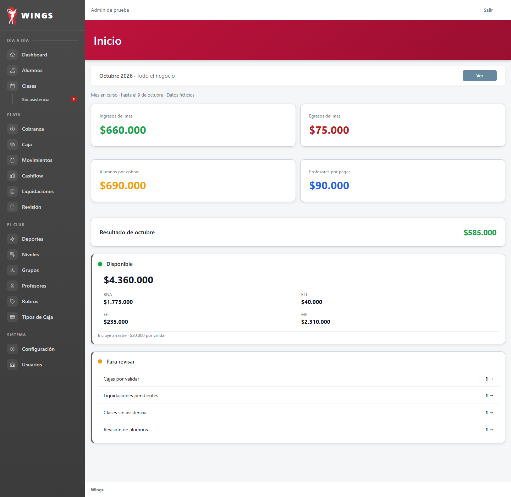
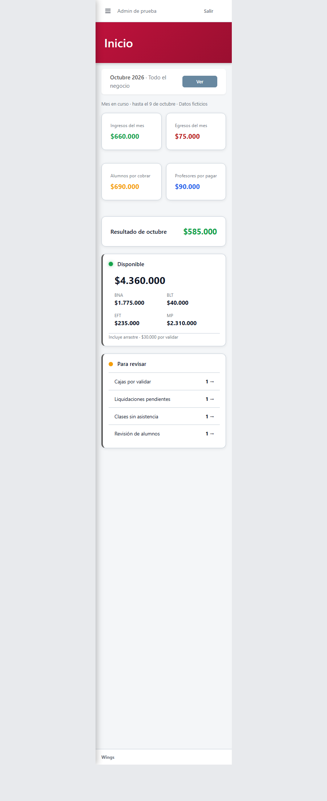

Inicio y Reportes · Propuesta
Datos ficticios: 24 alumnos, abril–octubre de 2026. Imágenes generadas por Laravel y capturadas desde Wings; celular dentro de un marco real de 375 píxeles. El aspecto todavía está por elegir.
Primero: Inicio




Después: Reportes


Los filtros de la propuesta muestran el aspecto; su conexión a las pantallas habituales es el paso siguiente. El gráfico permite ver importes exactos y los detalles se abren bajo cada apartado.
Control del método: login a 375. La pantalla entra completa.